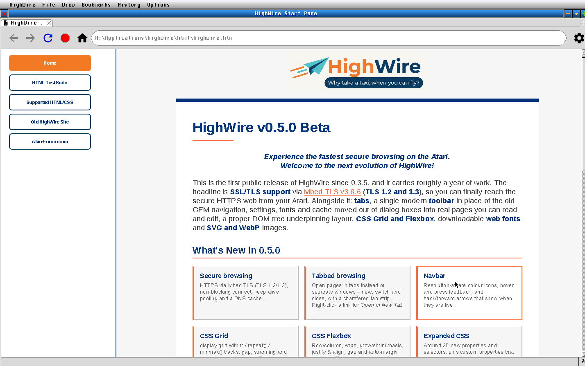
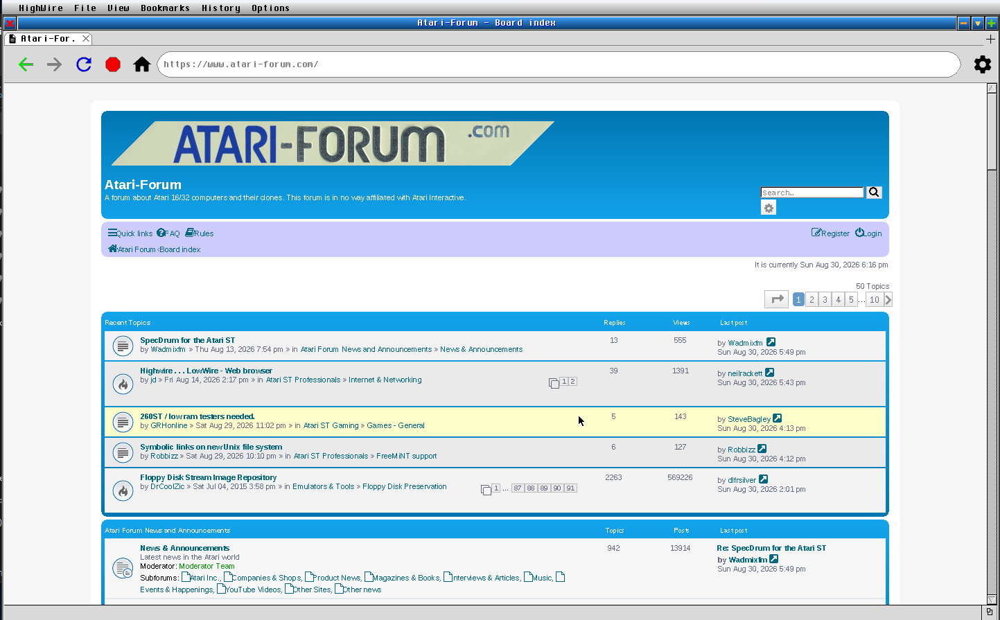
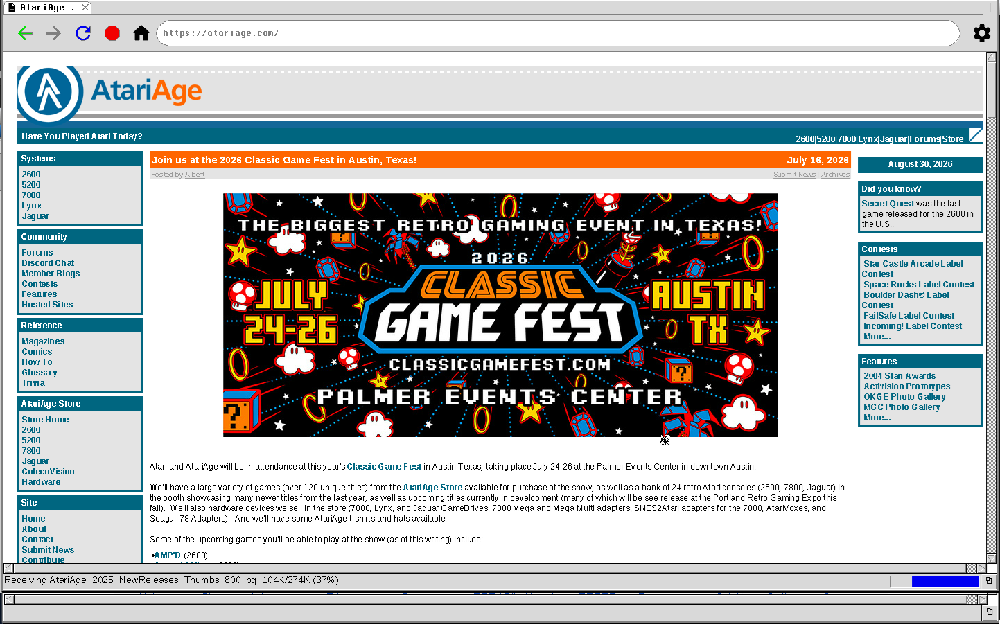
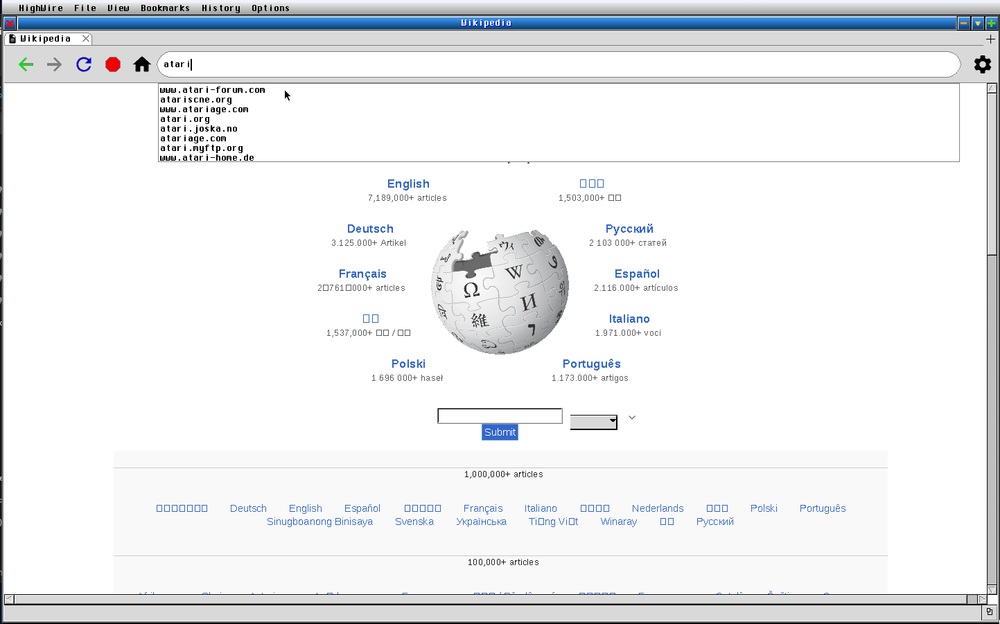

Why take a taxi, when you can fly?
HighWire renders the modern web — real HTML and CSS, flexbox and grid — and reaches HTTPS sites through Mbed TLS, on TOS, FreeMiNT and MagiC. And it does it with the speed the platform is loved for.
Download Beta0.5.0 Beta · for 68030 and up
This is the first HighWire in a very long time, and it carries roughly a year of work. The headline is SSL/TLS support through Mbed TLS (TLS 1.2 and 1.3), so you can finally reach the secure HTTPS web from your Atari. Alongside it: tabbed browsing, a single modern toolbar in place of the old GEM navigation, settings, fonts and cache moved out of dialog boxes into real pages you can read and edit, a proper DOM tree underpinning layout, CSS Grid and Flexbox, downloadable web fonts, and SVG and WebP images.
HTML and CSS rendered on the metal — including flexbox, grid, custom properties and web fonts — not a stripped-down subset.
HTTPS through Mbed TLS, with certificate verification. TLS session resumption means repeat visits reconnect fast.
Tabbed browsing, GEM chrome, in-app settings. Speaks MiNT-net, STiK and STinG through loadable network modules.
Speed is what HighWire is loved for — rendering and layout are tuned for classic hardware, not bolted on after.
Click any shot to open it full size.




1.Unzip the archive into a folder on your
Atari, keeping cacert.pem next to hw_30-60.app
— it is what verifies HTTPS sites.
2.Launch hw_30-60.app. The start
page opens in the first tab.
3.Type an address, or middle- or right-click a link for Open in New Tab. Tabs open, switch and close along the toolbar.
4.Settings live on ordinary pages: open
about:settings, about:fonts and
about:cache from the address bar or the gear icon.
5.Hit a rendering or connection problem? Add
LOG_SYNC = 1 to highwire.cfg, reproduce it, and send
the HIGHWIRE.LOG with the page address — it makes a report
far more useful.
HighWire is built for a platform nobody ships binaries for any more, against libraries that mostly assume a little-endian machine with a modern libc — several of them need patching before they work on a 68k at all. The HighWire-Browser organisation keeps everything needed to build the browser in one place, at the versions it was built against, so it can be rebuilt without rediscovering which libpng we used or why AES-GCM failed on big-endian.
HighWire is the work of The HighWire Project. The engine — parser, scanner, renderer, scheduler and layout — and the network overlay modules are substantially the work of Ralph ("AltF4") and Dan ("Baldrick"), built on the original Project HighWire source release by Robert Goldsmith.
HighWire's TLS and SVG libraries needed 68k / big-endian patches to work at all, and those forks are public — the mbedTLS handshake fixes and the nanosvg rasteriser fixes. The forks, the bugs we fixed, and how to build →
HighWire 0.5.0 Beta, for 68030-and-up systems (built 68020–60).
CPU 68030 or faster; a 68060 is strongly suggested.
Graphics A Speedo-capable GDOS — SpeedoGDOS, NVDI 3+, or fVDI.
Network A MiNT-net or STiK/STinG stack (modules included).
Memory Plenty of free ST and TT RAM — modern pages are large.
Some modern, script-heavy sites may not display in full.
{kind=link}
{kind=link}
{kind=link}
{kind=link}